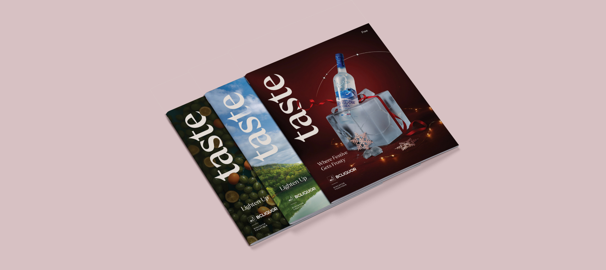
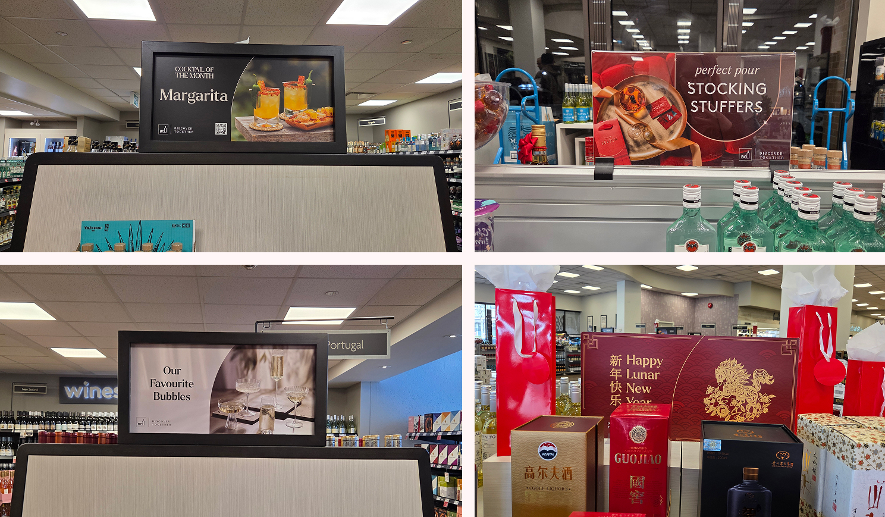
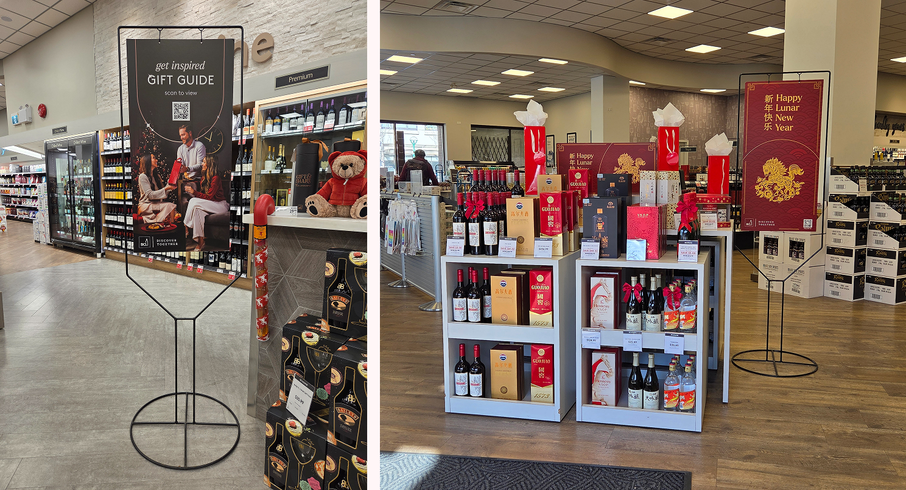

TASTE Covers and Retail Collateral

About BCLIQUOR
BCLIQUOR has nearly 200 stores in British Columbia, being one of its largest liquor retailers. The Liquor Distribution Board (LDB) has a team of marketing creatives, including a graphic design team who designs for store events and marketing campaigns.
TASTE Magazine Covers
The seasonally published TASTE magazine by BCLIQUOR is produced in-house. 3-4 magazine issues are produced and published each year. Covers for each issue are conceptualized and iterated for final approval several seasons before the issue's publication date.
Role
Cover concept production artist for the TASTE Winter 2025 and Spring 2026 covers.
Brief
Relative to the previous TASTE covers, these new covers should be visually push how alcoholic bottles can be showcased in an environment, and creatively represent the taglines, such as “Lighten Up” for Spring. The featured liquor product should take priority on the cover, and there must be an overlapping element over the “TASTE” masthead.
In-Store Collateral
In-store collateral is fully produced in-house by the design team. New collateral is designed every month and reflects current BCLIQUOR promotions and campaigns. The goal is to be eye-catching (especially in a sea of similarly shaped bottles) and direct consumers to consider how the products may fit into their lives.
Role
Graphic designer

